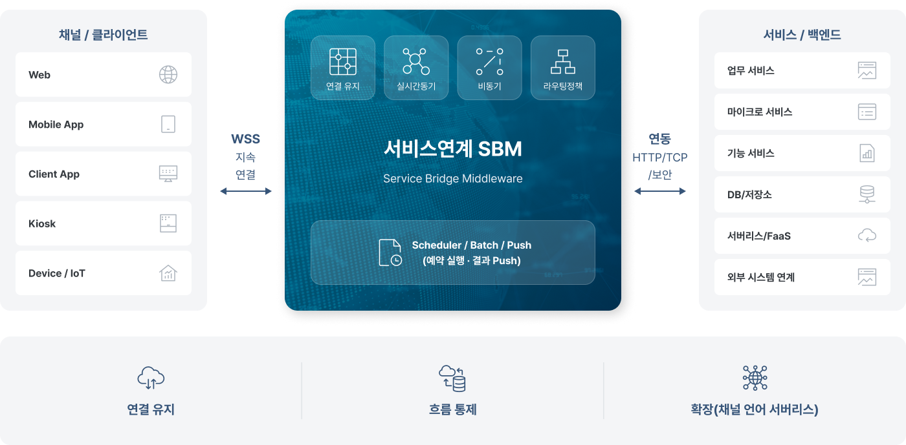
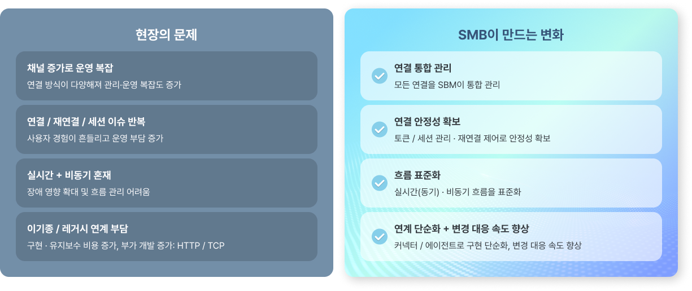
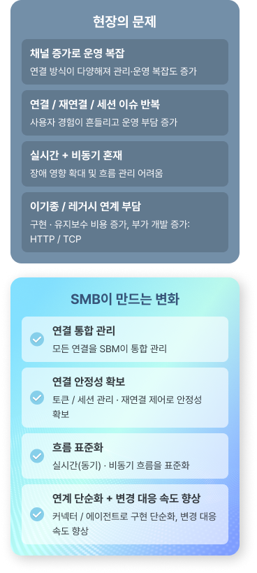

Service Bridge Middleware
서비스연계 SBM(Service Bridge Middleware)
OPENBRICKS의 서비스 SBM은 단순 API 연계를 넘어, 채널/클라이언트–서비스–외부 연계 사이의 연결과 흐름을 운영 가능한 구조로 설계·구현하는 구축 서비스입니다.
서비스연계 SBM이란?
SBM은 다양한 채널, 서비스, 외부기관, API, 전문 데이터 흐름을 실시간·비동기 방식으로 연결하고 운영할 수 있도록 지원하는 연결 브릿지 미들웨어 (Service Bridge Middleware)입니다.

Why SBM
왜 SBM이 필요할까요?
시스템이 커질수록 문제가 생기는 지점은 대개 “연결과 운영”입니다.


SBM는 연결과 흐름을 공통 구조로 통합해 표준화된 실행 구조로
제공함으로써 운영 복잡도를 줄이고 서비스 품질을 높입니다.
OPENBRICKS SBM 기반 구축 범위
OPENBRICKS의 SBM은 서비스 연계·중계·흐름 통제를 다음 범위까지 실제 구현합니다.
일반 연계가 필요 시 호출하는 단절형 호출이라면,
SBM은 연결 유지와 흐름 통제를 통해
실시간 상호작용과 운영 안정성을 강화합니다.
서비스/채널/외부 시스템 연계 구조 설계·구현
라우팅·정책·변환 기반 데이터 흐름 구성
실시간(동기) 요청·응답 처리
비동기 /이벤트메시지 처리 (큐, 재시도, 지연/순서 제어)
스케쥴러 기반 배치/예약 실행 및 결과 Push 흐름
장애 대응 및 운영 안정성 설계(예외, 재시도, 격리, 가시성)
컨테이너/서버리스 기반 확장 구조 적용
SBM 적용 시나리오
연결 구조를 진단하고, 기준을 수립해, 운영 가능한 형태로 구현합니다.
현황 진단
대상·흐름·병목
장애 포인트 파악
연결 구조 설계
동기/비동기 기준
정책·데이터 흐름 설계
SBM 적용 구현
연결 유지·라우팅·정책,
예외/재시도 등 구현
검증·안정화
시나리오·부하·장애
검증 및 튜닝
운영 이관
관측/알림·대응 절차
유지보수 기준 수립
완성
복잡한 연결을 표준화된
흐름으로 정리해, 변경과 확장에
유연한 구조로 완성합니다.
SBM Adventages
SBM 기반 구현 강점
다양한 채널·언어·프로토콜·서브리스를 운영 가능한 연결 구조로 묶습니다.
다채널 확장
다양한 접점 지원
다언어 커넥터
유연한 개발 환경
프로토콜 지원
실시간 최적화
서버리스 및 배치·푸시
자동화 및 효율화
SBM 핵심 메커니즘
연결 유지 · 흐름 통제 · 운영 안정성을 기반으로 변화와 확장에 강한 연계를 구현합니다.
WSS 기반 연결 유지 및 토큰/클라이언트 관리
WSS(Primary) 기반 지속 연결과 세션·상태를 안정적으로 관리
토큰 검증 및 재연결 제어를 통해 연결 흐름 통제 및 실시간 서비스 안정성 강화
실시간(동기)와 비동기 흐름을 함께 구성
실시간 요청·응답(동기) 처리와, 이벤트/메시지(비동기) 흐름을 상황에 맞게 설계
지연/재처리/순서 보장 같은 운영 요구를 구조에 반영해 흐름 무너짐 방지
정책/라우팅 기반 운영 통제와 다중화 트래픽 분배
라우팅/정책 지점을 통해 예외/재시도/타임아웃 등 운영 기준을 일관되게 적용
다중화된 서비스에 대한 트래픽 분배로 확장 구조와 운영 효율 확보
다양한 채널과 프로토콜을 유연하게 연결
다양한 채널(Web/App/Kiosk/Device) 클라이언트 확장을 고려한 구조 설계
WSS 중심 구조에 HTTP/TCP를 보완 적용해 다양한 연계 환경에 대응
다양한 언어와 레거시, 서버리스 연결로 확장 용이
Backend(Java/.NET/Node.js/Go), Frontend(WebAssembly 기반)
Legacy·Serverless 구조 대응으로 유연한 확장 지원
스케줄러, 배치, Push로 운영형 연계 보강
특정 시각/간격의 배치 실행, 작업 결과 Push 전달 흐름 구성
요청 기반 연계뿐 아니라 운영형(주기/예약/결과 통지) 연계까지 확장
SBM 기반 운영 안정성의 차이
SBM은 단순 연결을 넘어, 인프라 구조를 개선해 운영 품질을 안정적으로 유지하며,
장애 발생 시에도 빠르게 인지·통제 가능한 구조를 지향합니다.
SBM은 단순한 연결 도구를 넘어 인프라 전반의
구조적 혁신을 통해 운영 품질을 일정하게 유지함으로써,
기존 방식과는 확연히 다른 본질적인 차이를 만듭니다.
세션 관리와 재연결 제어를 통해 채널 확장 시에도 흔들림 없는 연결성 확보
타임아웃 및 재시도 규칙의 흐름 반영을 통한 실시간·비동기 혼합 환경의 일관된 흐름 구현
라우팅 통제로 장애 확산을 방지하고 표준 구조기반의 빠른 변경 대응 실현
처리 흐름 및 로그 모니터링을 통한 신속한 장애 원인 파악과 품질 향상
Beyond Systems,
We Connect Business
오픈브릭스는 AX 기반 시스템 통합으로
시스템을 넘어, 비즈니스를 연결합니다.